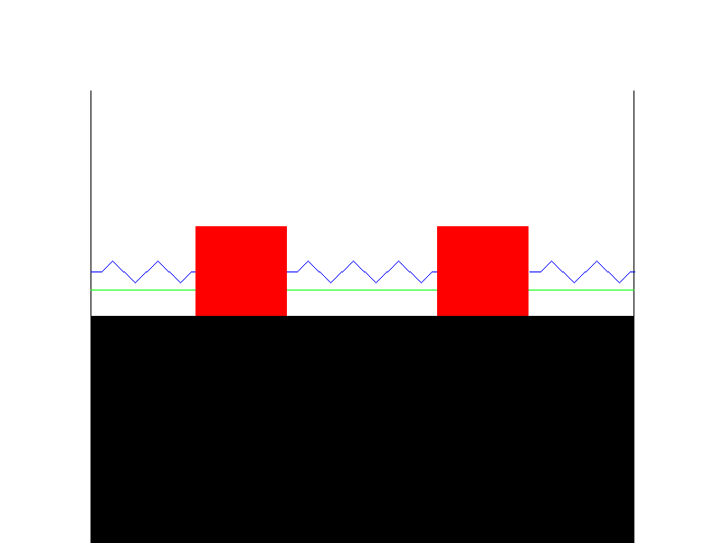
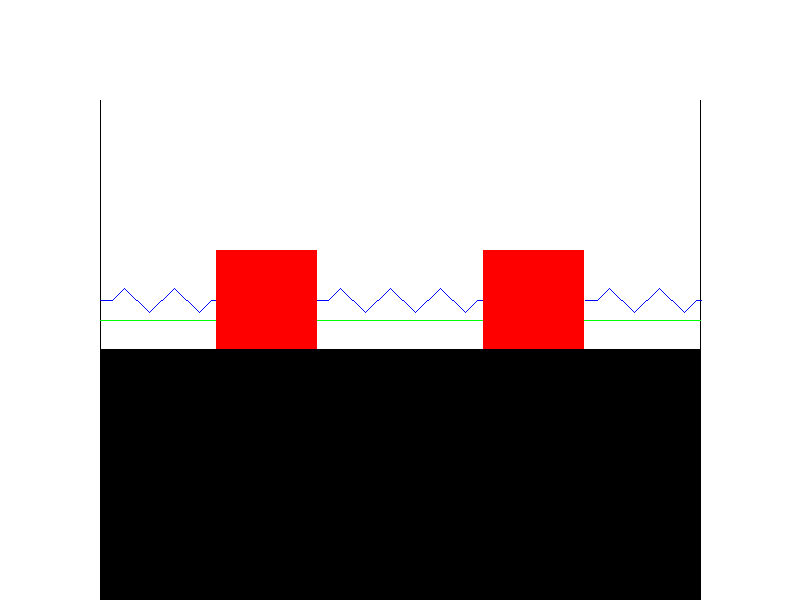
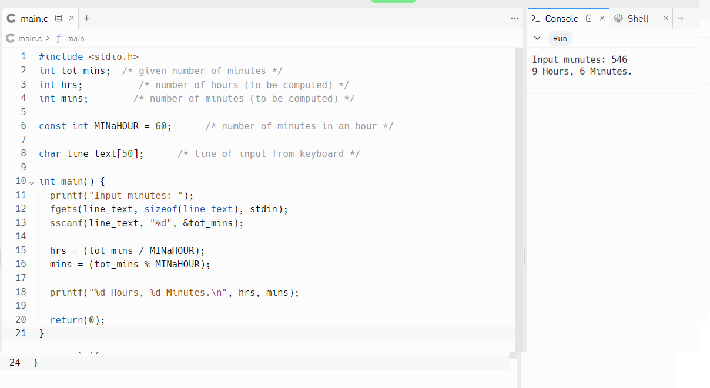

課程評分 <<
Previous Next >> w7
w6
寫一個將攝氏度轉換為華氏度的程式。
預期輸出：
輸入溫度（攝氏度）：45
113.000000 華氏度 。  1111111.txt
。  1111111.txt
寫一個計算球體體積的 C 程式。
預期輸出：
輸入球體的半徑：2.56
球體的體積為 82.63324。 222222222222.txt
寫一個 C 程序，將公里每小時轉換為英哩每小時。
預期輸出：
輸入公里每小時：15
9.320568 英里每小時
33333333333.txt
寫一個 C 程序，以小時和分鐘為輸入，併計算總分鐘數。
預期輸出：
輸入小時：5
輸入分鐘：37
總計：337 分鐘。
44444444.txt
用C 寫一個程序，以分鐘為輸入，並顯示總小時數和分鐘數。
預期輸出：
輸入分鐘：546
9 小時 6 分鐘 
5555555.txt
用 C 語言編寫一個程序，讀取名字、姓氏和出生年份，並依序顯示姓名和年份。
預期輸出：
輸入您的名字：Tom
輸入您的姓氏：Davis
輸入您的出生年份：1982
Tom Davis 1982
6666.txt
用 C 語言寫一個程序，計算一行輸入的三個數字的和，並用逗號分隔。
預期輸出：
輸入三個數字，以逗號分隔：5,10,15
三個數字總和：30
7777.txt
寫一個C 程式來執行兩個數字的加法、減法、乘法和除法。
預期輸出：
輸入任意兩個數字，以逗號分隔：10,5
給定數字的和：15 給
定數字的差：5
給定數字的乘積：50給
定數字的商數：2.000000
8888888.txt
如果給定兩個角，請寫一個 C 程式來求三角形的第三個角。
預期輸出：
輸入以逗號分隔的三角形的兩個角：50,70
三角形的第三個角：60 
99999.txt
寫一個C 程式將字串轉換為無符號長整型。
測試數據和預期輸出：
輸入無符號數：25
輸出：25
101010.txt
課程評分 <<
Previous Next >> w7